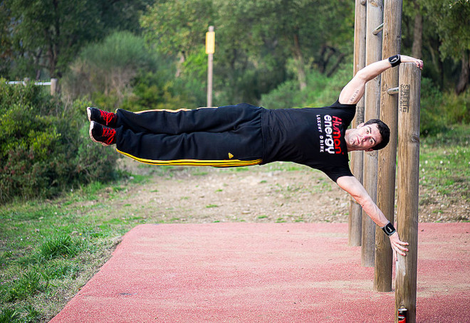
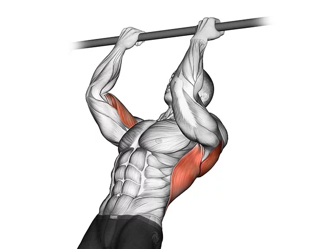
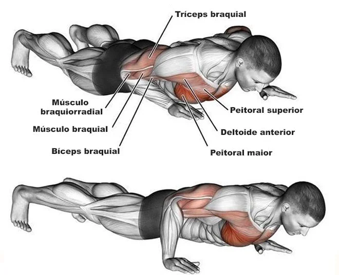
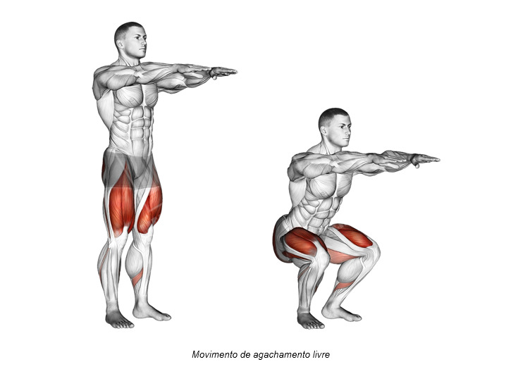
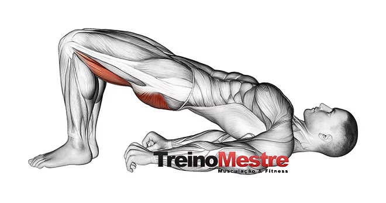
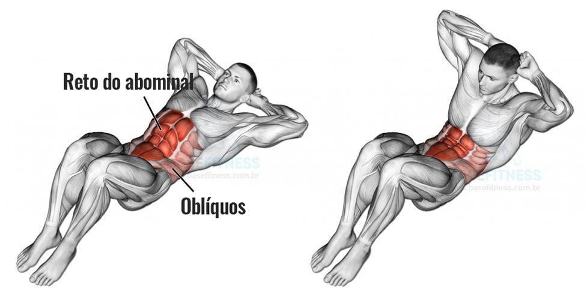
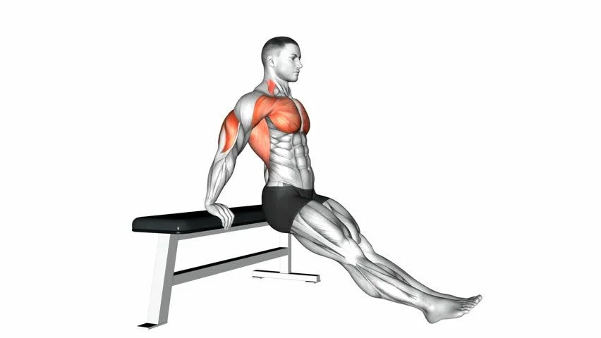
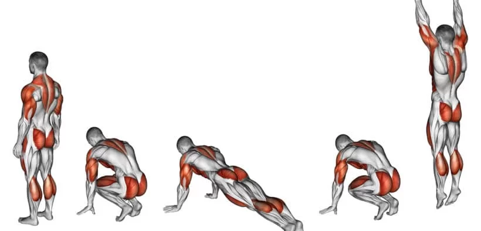

O que é Calistenia?
Calistenia é um tipo de ginástica funcional que pode ser feita com bastões, flexões de braço, abdominais, barras fixas, saltos, corrida, entre outras atividades. Este tipo de exercício melhora o condicionamento físico e ajuda a emagrecer.A técnica da calistenia foi criada pelo Dr. Lewis e pela A.C.M, Associação Cristã de Moços. A finalidade era promover a saúde e aprimorar a aptidão física das pessoas.
Benefícios da Calistenia
- Aumento da flexibilidade e da mobilidade articular;
- Aumento da resistência e força muscular;
- Maior consciência corporal;
- Aumento da massa muscular;
- Ativação do metabolismo;
- Aumento do gasto energético e diminuição do percentual de gordura;
- Desenvolvimento da coordenação motora;
- Melhor equilíbrio corporal.
Principais Exercícios da Calistenia
- Barra fixa 
- Flexão de braços 
- Agachamentos e suas variações 
- Elevação pélvica 
- Abdominal 
- Mergulho no banco 
- Barra paralela
- Burpee 
- Abdominal alpinista (Mountain climber)
Exercício que recruta os músculos da dorsal é bem utilizado tanto nos parques, assim como em academias.
Também é bastante conhecido e realizado este exercício, os principais grupos musculares recrutados nesta atividade são o peitoral, deltoide anterior e tríceps.
O agachamento é o principal exercício para quadríceps e capaz de recrutar uma grande quantidade de massa muscular, com certeza esta atividade não pode faltar no treino para fortalecer também os músculos inferiores. O Agachamento pode ser feito apenas com o peso do corpo e de forma mais lenta e cadenciada, para aumentar a intensidade do exercícios.
Outro exercício com o peso do corpo que não pode faltar é a elevação pélvica. Exercício que trabalha os músculos da coxa, principalmente quadríceps e também glúteos.
A região do core é bastante utilizada para dar estabilidade na maioria dos exercícios de calistenia e trabalhar os músculos abdominais é uma boa maneira de evoluir nas outras atividades.
O exercício de mergulho no banco trabalha principalmente o tríceps, que solicitações também do peitoral e deltoide posterior.

O exercício de barra paralelas também é excelente para trabalhar a região do peitoral, deltoide e tríceps.O aparelho para realizar o exercício é facilmente encontrado em parques e academias.
O burpee também é um excelente exercício calistênico e que ainda ajuda a queimar calorias e manter o condicionamento físico. Veja sua execução correta logo acima.
O abdominal alpinista além de também ajudar a queimar calorias e melhorar o condicionamento físico, é um excelente exercício para região do core e ajuda a fortalecer pernas e glúteos. Execução:Na mesma posição de flexão de braço e com o abdômen contraído, leve o joelho até o peito permanecendo com a outra perna estendida. Depois vá alternando os movimentos. Para iniciantes, 3 séries de 20 repetições com descansos de 60 segundos são suficientes.